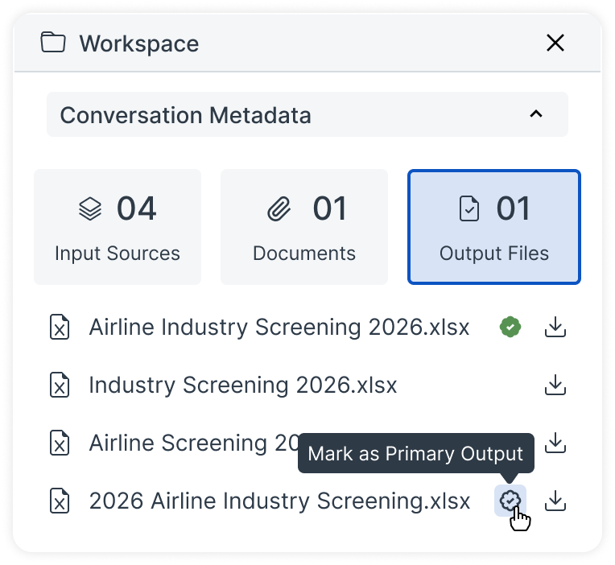
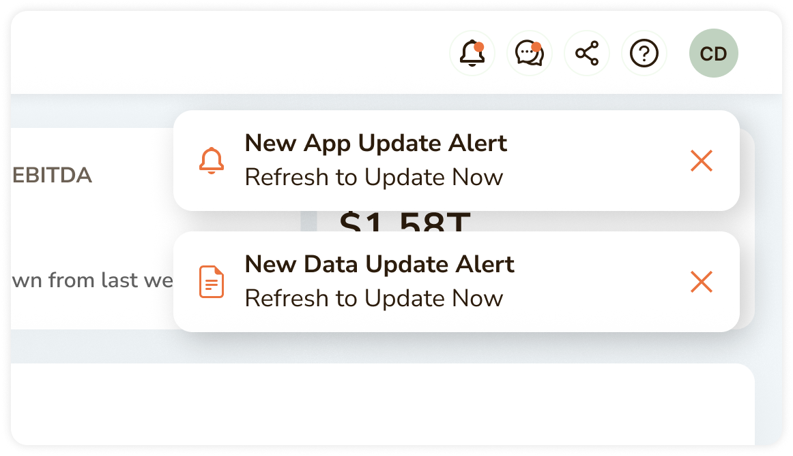
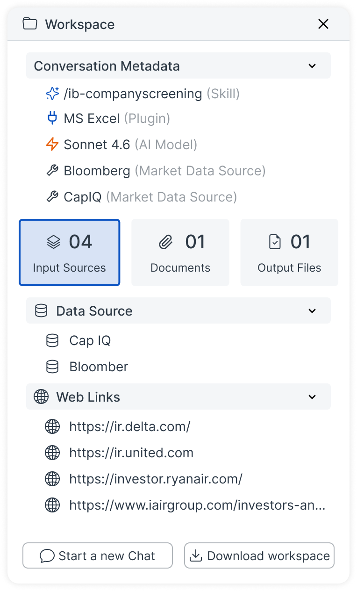
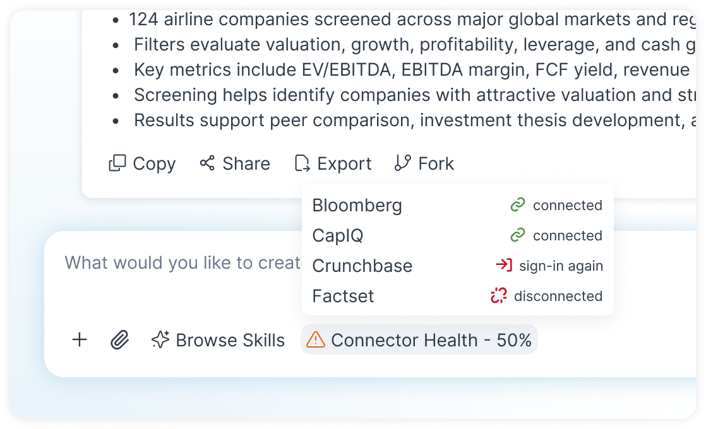

An end-to-end AI product for financial teams — bringing finance-tuned chat, structured conversations and files, and an in-product app builder into one connected workflow.
Financial analysts sit at the intersection of heavy data and heavy output pressure, but the tools in between are disconnected. The result: analysts spend more time managing the process than doing the analysis.
The inefficiency appears as senior analyst time spent on formatting instead of judgment, repeated rework when data changes, and deliverables delayed because multiple tools have to talk to each other manually.
Expensive analyst time spent pulling, reformatting and re-explaining context.
Client-facing outputs rebuilt when source data changes.
Delayed delivery, stale dashboards and version confusion.
Per analyst time recovered each week.
Target reduction in time-to-first-output and client-facing rework.
Rather than building a smarter chatbot, we designed a connected workspace where chat, data, files and the final client deliverable are part of the same system.
A dedicated harness layer connects directly to CapIQ, Bloomberg, PitchBook, FactSet, public filings and client databases through MCP and connectors, so the model works with sourced financial data from message one.
Conversations and files become structured, trackable and actionable. Bookmark important work, inspect versions, mark a primary output, and run bulk actions across related files or conversations.
Build a client-ready dashboard inside the product and push new outputs directly to an existing app, so clients see the latest numbers without another “please resend” email.
Before designing anything, we ran in-depth research with analysts, research managers and institutional stakeholders across IB, PE, AM and Compliance to understand how work actually moves.
We designed three connected surfaces that map to how analysts actually move through work:
converse → organize → deliver
Financial-context chat with direct connector access, skills and plugins pre-loaded per use case, and templates that generate outputs matching firm/client formatting from the first draft.
A structured home for every conversation and file — bookmarking, file-wise views, a primary-output marker, and metadata for sources, templates and models.
A no-rework path from analysis to client deliverable — build a dashboard or custom analysis view and push updated outputs to an existing app.
We put the connected chat → repository → app builder flow in front of analysts and managers. The core idea held up, but execution gaps emerged.
Introduced a visible “Primary” badge indicator.
Users were unsure if pushing a new output would silently change what a client was viewing mid-meeting.
Sources, models, templates and analysis history competed for attention without a clear hierarchy.
When a CapIQ or Bloomberg pull failed or data was stale, users had no in-chat signal.
Each issue mapped to a specific design fix, validated in a second round of testing.
Introduced a visible “Primary” badge indicator.

Client gets a notification for new update and when clicked on 'Refresh Dashboard' would apply the new changes.

Restructured Workspace into Overview, Sources, Outputs and Metadata tabs for progressive disclosure.

Added inline status chips — connected, syncing, stale or failed — next to each data source as well as once a prompt is run, the prompt section shows a status of all that was connected..

The connected workflow removes repeated setup and creates a direct path from sourced analysis to a living client deliverable.
| Step | Surface | Time |
|---|---|---|
| Pull data manually | Terminal + Excel | ~35 min |
| Re-explain context | Generic AI chat | ~15 min |
| Draft & format report/deck | Word / PPT | ~2.5 hrs |
| Save & track versions | Drive / email | ~10 min |
| Build client dashboard | Separate BI tool | ~3 hrs |
| Re-send when data changes | ~10 min (repeated 3-4x/week) | |
| Total | ~6.5 hrs |
| Step | Surface | Time |
|---|---|---|
| Chat with connected sources | Chat / Harness | ~8 min |
| Apply skill / template preset | Chat | ~3 min |
| Auto-save, tag & mark primary | Repository | Instant |
| Create a client Dashboard (One-time job) | App Builder | ~20 min |
| Push to client dashboard | App Builder | ~5 min |
| Total | ~40 min · ↓ 85% |
Reduction in time-to-first-draft
Target analysts actively using the product
Per analyst from manual work
Fewer duplicate / near-duplicate outputs
In regulated financial workflows, showing where a number came from mattered to adoption more than how smart the AI seemed.
Chat, Repository and App Builder had to share sources, versions and metadata invisibly, or users perceived them as three products again.
Bulk actions and live-push updates became usable through confirmation and preview patterns, not simply discoverability or onboarding.
Direct MCP connectors to CapIQ, Bloomberg, PitchBook and FactSet did more for credibility with financial users than chat polish alone.
[Add what you would do differently, what surprised you, or how this project shaped your design process going forward.]
When the workflow is complex, the interface should carry the complexity through connected context rather than making users carry it themselves.